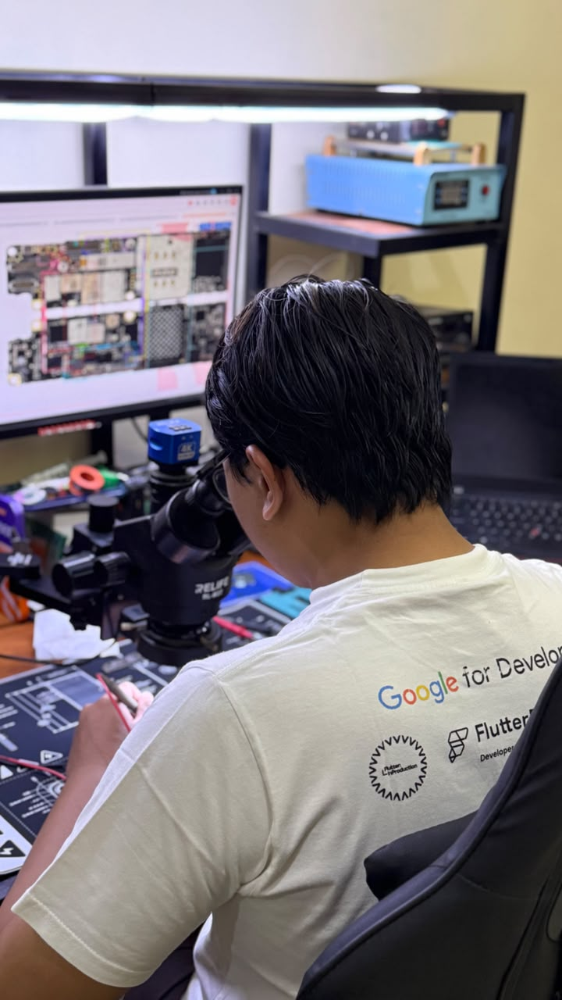

Servis laptop
Laptop lemot, mati total, layar retak/bergaris, atau keyboard mulai error.
Toko Servis HP & Laptop di Cileungsi
Layar pecah, mati total, atau susah dicas? Ceritakan kendalanya, kami bantu diagnosa.

ANATOMI HP
Di balik layar, delapan komponen ini bekerja bersama. Ketuk bagian yang ingin kamu kenali untuk melihat fungsinya.
ANATOMI LAPTOP
Kenali delapan bagian laptop, dari keyboard hingga prosesor. Ketuk komponen di ilustrasi untuk mengenal cara kerjanya.
LAYANAN KAMI
Pilih perangkatmu untuk mulai konsultasi. Estimasi biaya dan waktu pengerjaan kami sampaikan setelah pengecekan.
Laptop lemot, mati total, layar retak/bergaris, atau keyboard mulai error.
HP susah dicas, baterai boros, layar pecah/tidak merespons, atau kendala lainnya.
Ceritakan gejalanya dan sejak kapan muncul. Kami bantu diagnosa awal dan langkah penanganan yang tepat.
Dari pengecekan sampai perangkat siap diambil.
Teknisi memeriksa kondisi perangkat secara menyeluruh untuk memastikan sumber kerusakannya.
Kami jelaskan hasil pengecekan, estimasi biaya, serta waktu pengerjaan sebelum kamu memutuskan lanjut servis.
Perbaikan langsung dikerjakan dengan teliti sesuai tindakan dan biaya yang sudah disepakati.
Perangkat siap diambil setelah lolos pengujian pada semua fungsi, lengkap dengan perlindungan garansi servis sesuai ketentuan
TEMUKAN BITER
Jl. Villa Surya Jaya No. 3, RT.03/RW.09, Setu Sari, Kec. Cileungsi, Kabupaten Bogor, Jawa Barat 16820
| Senin | – |
|---|---|
| Selasa | – |
| Rabu | – |
| Kamis | – |
| Jumat | – |
| Sabtu | – |
| Minggu | – |
Gunakan lokasi perangkat kamu untuk melihat perkiraan jarak kamu ke toko.
Disarankan chat WhatsApp terlebih dahulu sebelum berkunjung untuk memastikan antrean teknisi.
TANYA DULU, BOLEH
Isi detail perangkat dan keluhannya di samping. Format pesan akan otomatis kami siapkan untuk dikirim ke WhatsApp.
Tenang, kamu tetap bisa meninjau atau mengedit isi pesan sebelum terkirim.
Sebelum servis
Biaya disesuaikan dengan jenis kerusakan dan komponen yang diganti. Kami selalu menginfokan rincian estimasi biaya di awal setelah pengecekan, dan gratis biaya cek jika servis dibatalkan.
Untuk penggantian komponen ringan (seperti baterai, LCD, atau konektor cas) umumnya bisa ditunggu di hari yang sama jika stok tersedia. Untuk perbaikan mesin, estimasinya sekitar 1–3 hari kerja.
Cukup informasikan tipe perangkat dan kronologi kerusakannya. Jika perangkat masih bisa menyala, sangat disarankan mencadangkan (backup) data penting terlebih dahulu sebelum diserahkan.
Ya, setiap pengerjaan dan penggantian komponen di BITER dilengkapi garansi servis sesuai jenis tindakan. Syarat dan masa berlaku garansi akan dijelaskan di awal sebelum pengerjaan dimulai.